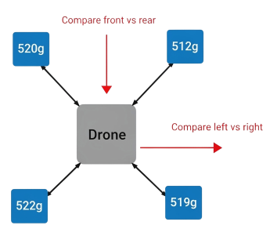

FSAC Flight Process
Perform the Center of Gravity (CoG) check to ensure your drone is balanced before flight.
Center of Gravity (CoG) Check
⚠️
Safety Tip
Always remove the propellers before handling or lifting the drone for CoG checks.

- Setup: Place one digital scale under each landing arm (total: 4 scales). Ensure all scales are zeroed before placing the drone.
- Position the Drone: Place the drone so each arm rests on one scale. Ensure the drone is level and not touching anything else.
- Read the Measurements: Observe the displayed weight on all four scales and note the values (front-left, front-right, rear-left, rear-right).
- Evaluate Balance: Values should be similar across opposite sides (front = rear, left = rear). A variation of ±5-10% is acceptable.
- Interpret Results: If one side is significantly heavier, the CoG is shifted in that direction. Adjust battery/payload until balanced.
Add A Drone
This step ensures your Remote Control is properly configured before finalizing the setup.